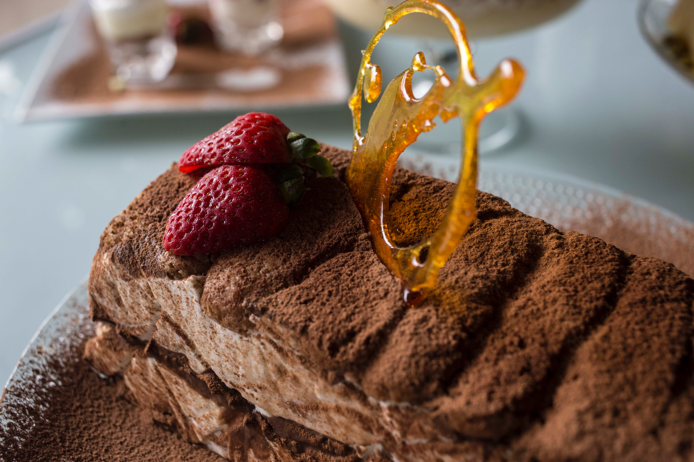

Indulge in our Heavenly Baked Goods.
A charming bakery nestled in the heart of the town inviting you to savor artisanal delights that warm both your heart and taste buds.
......................................................................

Our bakery opens its doors bright and early every day, welcoming you with the enticing scent of freshly baked goods starting at 6:00 AM until 7:00 PM. We take pride in offering an array of daily delights, from flaky croissants and decadent cupcakes to hearty breads and delicate macarons, ensuring there's something to satisfy every craving. As you step inside, our cozy and inviting ambiance provides the perfect backdrop for enjoying your treats, with warm lighting and a rustic decor that makes you feel right at home. Whether it's a quick morning coffee and pastry or a leisurely afternoon tea, our bakery is the ideal place to savor the simple pleasures of life and enjoy to the fullest.
